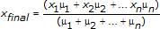
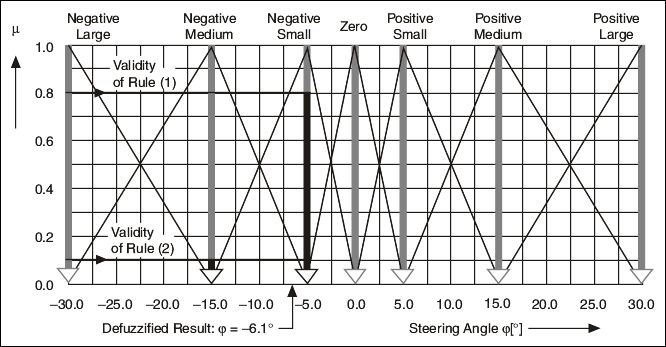
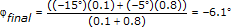

In the Center of Maximum (CoM) defuzzification method, the fuzzy logic controller first determines the typical numerical value for each scaled membership function. The typical numerical value is the mean of the numerical values corresponding to the degree of membership at which the membership function was scaled.

where xn is the typical numerical value for the scaled membership function n, and μn is the degree of membership at which the membership function n was scaled.
The following image illustrates how to use the CoM defuzzification method with the vehicle maneuvering example.

The values -15� and -5� are the typical values of the linguistic terms Negative Medium and Negative Small. The degrees of truth for these linguistic terms are 0.1 and 0.8, respectively. Therefore, the defuzzified crisp output value φfinal is calculated by the following equation:

The CoM defuzzification method is identical to the Center of Area (CoA) method with singleton membership functions.
The CoM and CoA defuzzification methods usually apply to closed-loop control applications of fuzzy logic. These methods usually result in continuous output signals because a small change in input values does not change the best compromise value for the output.